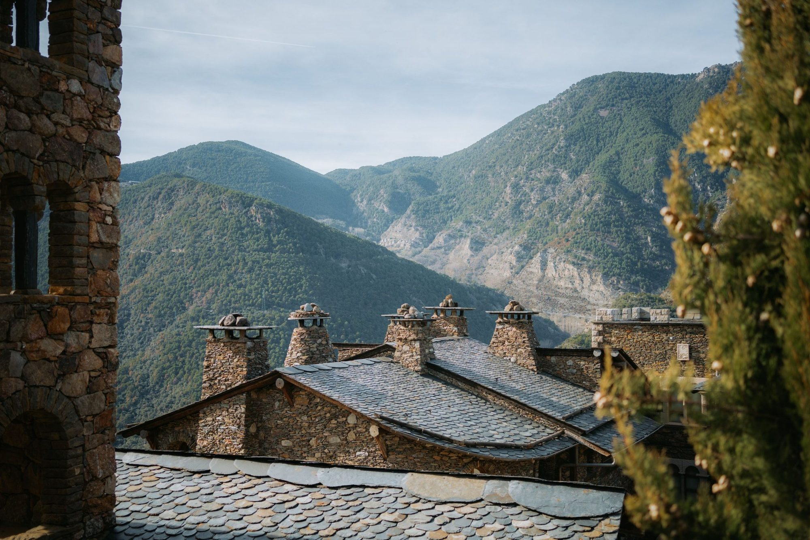
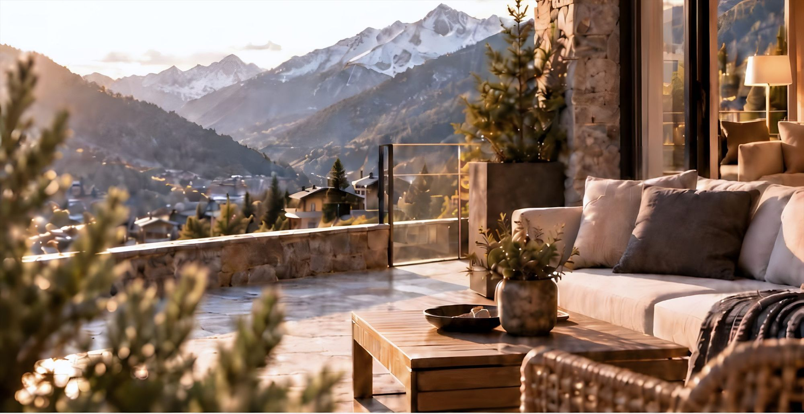

Déléguez le quotidien, savourez l’extraordinaire.
Des services immobiliers pour votre qualité de vie. Nous gérons tout le cycle de votre bien pour que vous n’ayez pas à le faire.

Plus qu’une agence : son évolution naturelle.
Fondée en 2014, Adriatic Real Estate est une entreprise andorrane composée exclusivement d’agents immobiliers diplômés (AGIA), forte d’une solide expérience et d’une vraie vocation de service.
Nous plaçons le client au centre pour couvrir tout le cycle de la gestion immobilière : au-delà de l’achat, de la vente ou de la location.

Gestion immobilière complète

Gestion horizontale
Administration complète des copropriétés.
Voir le service
Gestion verticale
Gestion locative pour les propriétaires investisseurs.
Voir le service
Promoteurs
Nous accompagnons le promoteur tout au long du processus, de la commercialisation à la mise en route de la copropriété.
Voir le service
Nous prenons soin de votre patrimoine comme s'il était le nôtre.
Une équipe propre et spécialisée
Notre meilleur atout, c'est l'équipe : des professionnels spécialisés qui travaillent de manière coordonnée pour offrir un service excellent.
Transparence et contrôle
Une information claire, le suivi des démarches et le contrôle financier.
Gestion complète
Administration, maintenance et services complémentaires.
Solutions innovantes
Des outils numériques et des services adaptés aux besoins de chaque immeuble.
« Je crois que le plus important, c'est le sérieux et l'efficacité, qu'il s'agisse d'un achat ou d'une vente, de la gestion de locations ou d'une copropriété. Après tant d'années et après avoir connu d'autres agences, je peux affirmer qu'Adriatic réunit toutes les conditions pour lui confier toutes ces démarches. »


Chaque bien est unique. Notre proposition aussi.
Que vous soyez promoteur, propriétaire ou représentant d'une copropriété, nous étudions vos besoins pour vous proposer une solution sur mesure.